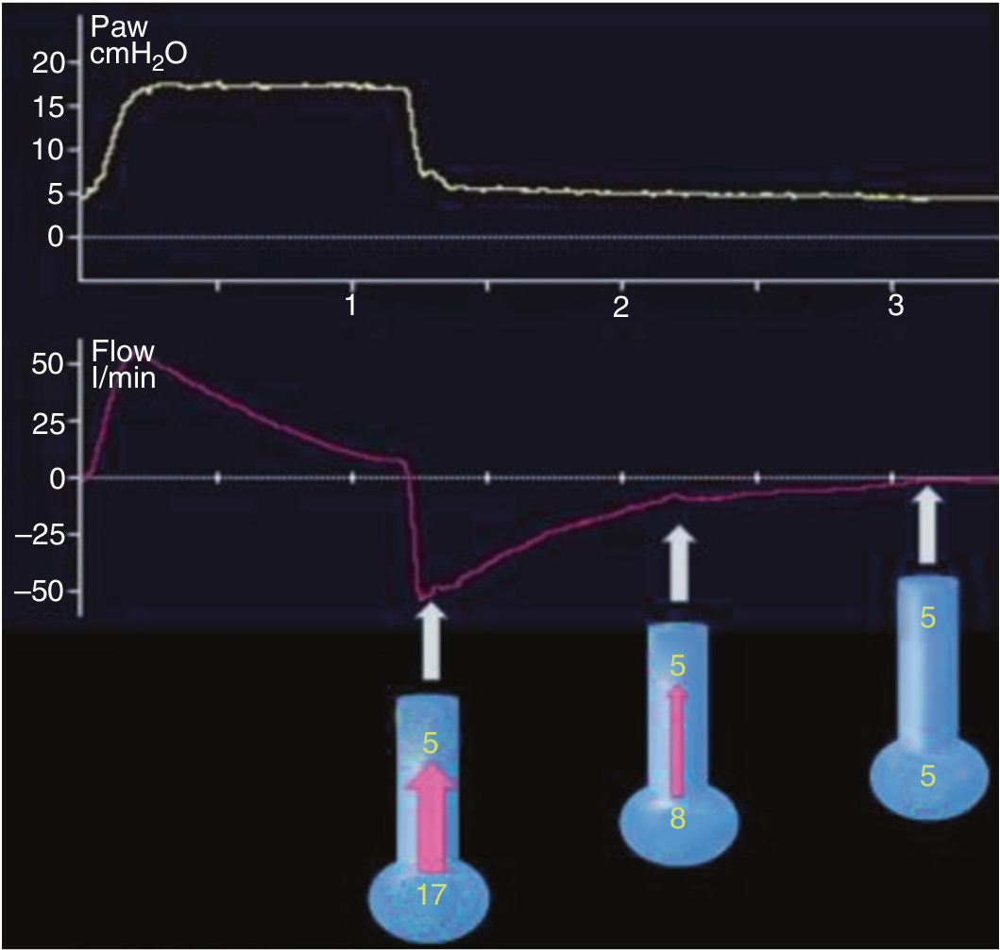

بصورت طبیعی بازدم با یک شدت جریان حداکثری آغاز میشود و بتدریج از شدت آن کاسته میگردد. در هر لحظه ای از بازدم شدت جریان متناسب است با گرادیان بین فشار آلوئول و PEEP که در ابتدای بازدم در حداکثر خود است و بعد از آن بتدریج کاهش می یابد.

شدت جریان در هنگام بازدم
۱ - بر حسب مد ونتیلاتور شکل آم ممکن است تغییر کند
۲ - با حداکثر مقدار خود شروع و سپس بصورت نمائی کاهش می یابد
۳ - مربع شکل است
۴ - متناسب با یک گرادیان فشاری است
۵ - ۲ و ۴ صحیح است